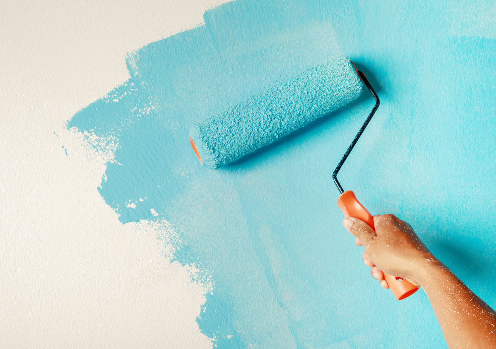

Lupa Painting Blog · Ceiling Painting Guide
How Professionals Paint Ceilings Like a Smooth, Bright, Flawless Canvas
Learn the professional process for painting ceilings without streaks, roller marks, shadows, or uneven coverage — and understand the tools and techniques experts use to keep ceilings looking smooth, bright, and perfectly uniform.

Ceilings are one of the hardest areas to paint — not because of technique alone, but because mistakes become extremely visible when light hits the surface. Streaks, roller lines, uneven patches, shadows, and “flashing” are very common in DIY ceiling painting.
Professional painters follow a method designed to ensure a perfectly smooth, bright result every single time. In this guide, you'll discover exactly how the pros prepare ceilings, choose the right products, and apply paint with flawless consistency.
1. Proper Preparation: The Foundation of a Perfect Ceiling
Ceilings collect dust, cobwebs, smoke residue, and water stains — all of which affect adhesion and final appearance. That’s why professionals begin with a detailed preparation routine.
What professionals do before painting:
- Remove light fixtures, vents, and covers when possible.
- Clean the ceiling with microfiber or a long-handled duster.
- Spot-wash dirty areas with TSP or degreaser.
- Repair cracks, seams, and nail pops with joint compound.
- Sand patched areas to create a flat, uniform surface.
- Cover the entire room with plastic and drop cloths to control dust and splatter.
Pro insight: Ceilings must be cleaner than walls before painting — even small dust particles can ruin a smooth finish.
2. How Pros Handle Water Stains, Smoke, and Discoloration
Stains are the #1 reason ceiling paint looks uneven. Simply painting over them does not work — they bleed right through flat paint, even after multiple coats.
How professionals treat stains correctly:
- Use stain-blocking primer: Zinsser BIN Shellac or Kilz Original are the industry standards.
- Apply primer only on stained areas or over the entire ceiling if discoloration is widespread.
- Seal water damage, smoke marks, rust stains, and yellowing before painting.
- For heavy stains, two coats of primer may be necessary.
Once stains are sealed, they will not return through the finished ceiling paint — a hallmark of professional work.
3. Choosing the Right Primer & Ceiling Paint
Ceilings require a very specific type of paint: ultra-flat, low-sheen coatings that hide imperfections and prevent light reflection. Professionals also choose products based on ceiling height, lighting, and texture.
Best primers for ceilings
- Zinsser Bulls Eye 1-2-3
- Kilz Original or Kilz Restoration
- Benjamin Moore Fresh Start
Professional-grade ceiling paints
- Benjamin Moore Waterborne Ceiling Paint: ultra-flat, hides imperfections.
- Sherwin-Williams Eminence Ceiling Paint: smooth, fast-drying, minimal splatter.
- Behr Ultra Ceiling Flat: top budget option.
A true ceiling paint is designed to reduce flashing, hide roller strokes, and deliver a clean, uniform finish in just one or two coats.
4. The Professional Rolling Technique for Streak-Free Ceilings
Ceiling painting requires precise timing and technique. Professionals use tools and patterns that minimize roller marks and ensure even coverage.
Tools professionals use:
- 18-inch rollers for faster, more uniform coverage.
- 1/2" or 3/4" nap roller covers for texture.
- Extension poles for better pressure control.
- Angled brushes for crisp edges and corners.
Professional rolling method:
- Always roll in straight, continuous sections.
- Keep a consistent “wet edge” to avoid flashing.
- Work away from natural light to reduce shadowing.
- Roll in the opposite direction for the second coat to eliminate lines.
- Maintain even pressure — no pushing down on the roller.
Pro tip: Ceilings should never be rolled in random patterns — consistent direction is key.
5. Popcorn, Knockdown & Textured Ceilings: What Changes?
Textured ceilings require different tools, thicker rollers, and more paint to penetrate the texture. Professionals also use special techniques to avoid pulling texture off the surface.
How pros handle textured ceilings:
- Use 3/4" to 1" nap rollers for deeper textures.
- Roll slowly to avoid splatter and texture damage.
- Apply heavier coats to reach all crevices.
- Use sprayers for heavily textured or popcorn ceilings.
Popcorn ceilings can also be safely removed or refinished by trained professionals if desired.
6. Final Inspection & Touch-Ups
Once the ceiling is dry, professionals inspect the entire surface under bright lighting to catch any missed spots or uneven shading.
What they check for:
- Shadows or dull patches
- Roller ridges or overlaps
- Missed edges near corners or crown molding
- Stains that need an extra coat of primer
- Splatter on walls, floors, or fixtures
Only after these touch-ups are completed is the ceiling considered professionally finished.
Conclusion
Ceiling painting may look simple, but achieving a perfect result requires preparation, the right products, and professional rolling technique. When done correctly, ceilings become bright, smooth, and completely free of streaks.
Whether you're planning a full interior repaint or a small refresh, treating ceilings with the same care as walls and trim makes your entire home feel cleaner and more polished.